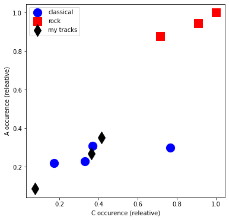
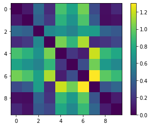
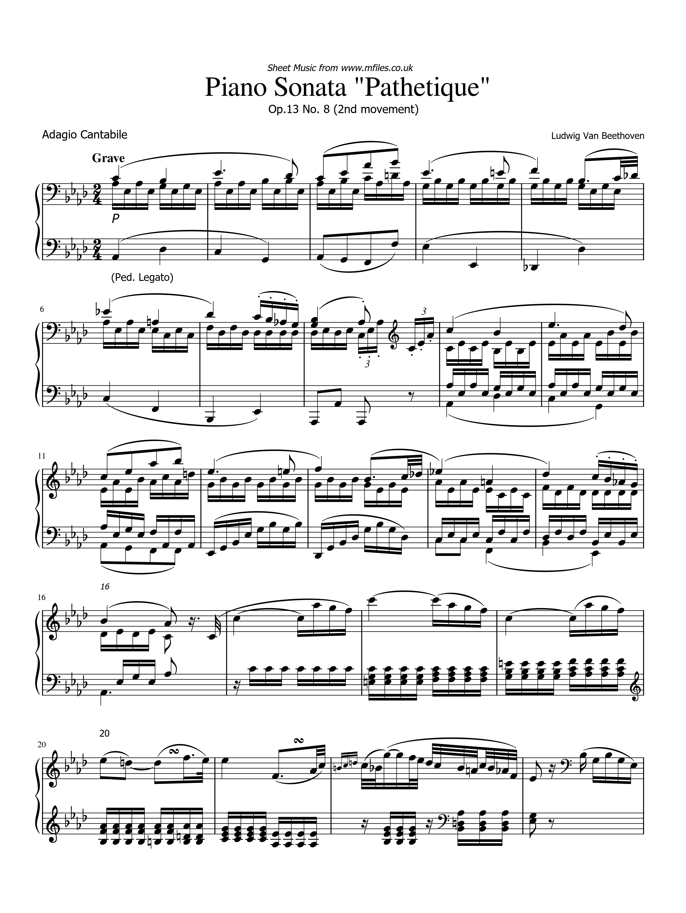
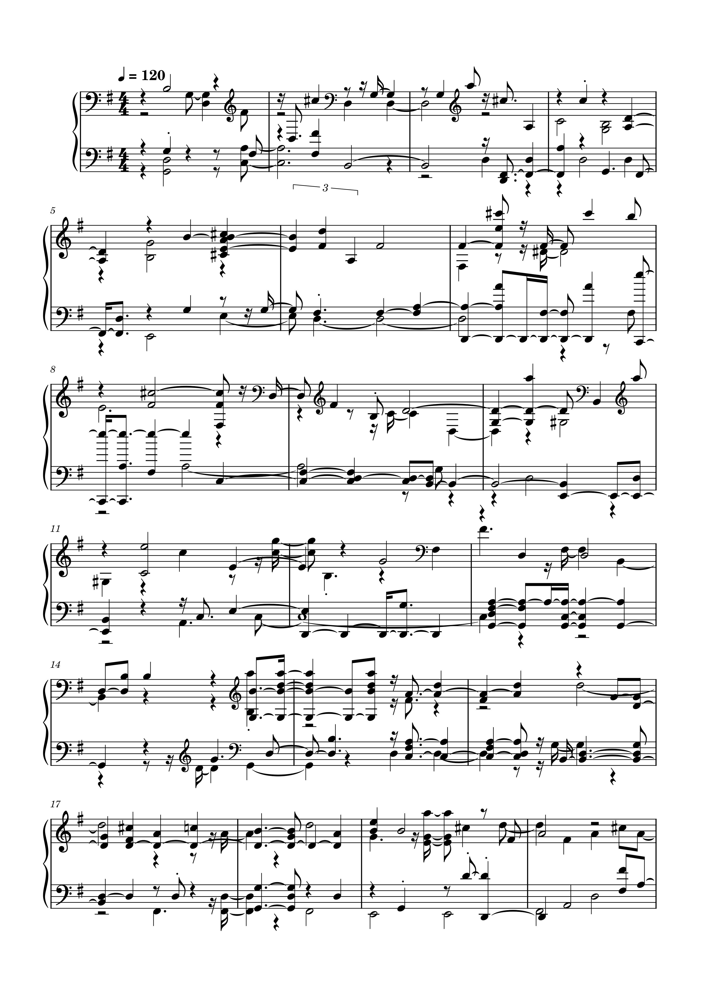

Task 1 - Similarity
For this task I have once again used the same audio files from the prior two weeks. Tracks 0-3 are classical, 4-6 are rock and 7-9 are my Beethoven tracks.
Task 2 - Trascription
Original WAV File

Converted Midi File

Reflections
The transcription process lost a very large amount of info, especially the rhythm which is surpising given how steady the first section of the sonata is.
Surprisingly it does manage to get most of the main chords in bar 5-6 but overall almost everything is lost in this transcription.